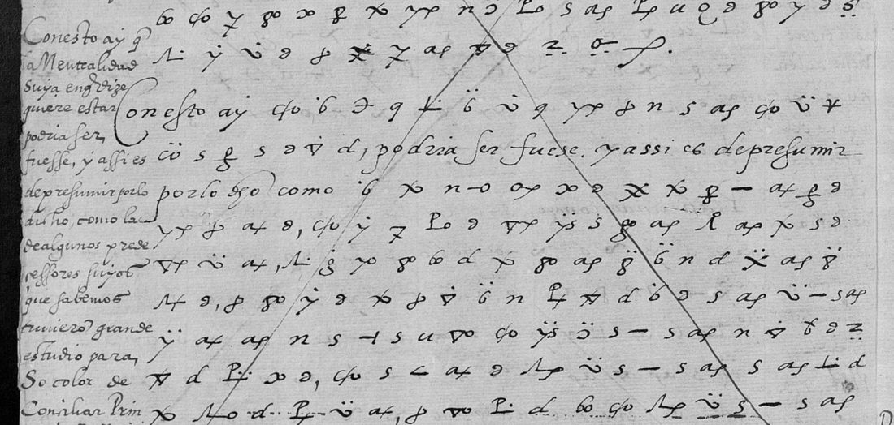

At a glanceExisting decipherment · the whole letter
- The letter
- Francisco de Vargas, Charles V's ambassador at Venice, to the Emperor, 25 August 1552: fourteen pages, most of them in cipher, with a postscript of the same day.
- Where
- Archivo General de Simancas, Estado leg. 1320 ff. 35–38; DECODE R9967 (16 images), listed with no decryption attached; catalogue item 197.
- The cipher
- The Imperial Cipher of 1544–1554 (Tomokiyo): letter symbols and code groups such as
agercardenal andpollopapa, with some clear words left in the cipher lines. - How it was deciphered
- At the time: a second hand wrote the decipherment in the left margins, at the page feet and between the lines, as one continuous text. It was transcribed from the DECODE images on 23 Oct 2026 and checked against the clear words in the cipher lines (ten places agree) and five recurring code groups.
- What it says
- Cardinal Sant'Angelo coming to Venice on French business; the Pope no anda limpio over Siena and his legate there may be a cover for taking the city; the Duke of Florence at risk of being deceived; the Duke of Urbino's request to Venice.
- Still open
- Eight words of the marginal hand, among them the legate's name (Mignanelli?), not made out at DECODE's resolution; the spelled cipher runs were not checked symbol by symbol, since the key is not in the repository.
- Credit
- Satoshi Tomokiyo (cryptiana) recorded the marginal decipherment and identified the cipher as the Imperial Cipher of 1544–1554.

01 The letter and its decipherment
DECODE imaged the four leaves as sixteen pictures whose own numbers are out of order; the archive's numbers in the image headers (0001–0016) give the order of the pages. The letter opens in clear (“En xvij del presente screvi a vuestra magestad”), runs in cipher from page 0001 to page 0011, each block struck through with a saltire once deciphered, returns to clear for the conde de Pitigliano's business, Piedmont and don Fernando de Gonzaga with three shorter cipher runs, and ends De Venecia xxv de Agosto MDLij, a postscript and the signature Fran.co de Vargas.
The decipherment is in a second hand, written beside and under the cipher it renders, so that the foot of one page and the top of the next carry the text of the cipher lines that follow. It was transcribed in full, marked margin, foot, top, interlinear and clear (R9967_decipherment.txt), and the letter was written out from it with the clear paragraphs from the original (R9967_reading.md, English R9967_en.md).
02 Checking the decipherment against the cipher
The key is not in the repository, so the cipher was not decoded symbol by symbol. Two checks were made instead (R9967_code_check.tsv):
- Clear words in the cipher lines. Vargas left short phrases in clear inside his cipher, and they agree with the decipherment word for word at every place they occur, ten in all: Tengo aviso de buen lugar que (0001), dixo en secreto aun confidente suyo (de do lo he entendido) que (0002), De aqui vengo a concluir (sino me engaño) que (0006) and others.
- Code groups.
ageris rendered cardenal three times,pollopapa five times, and the short groupss-o,x-o,n-oel, del, al; once (0005) the decipherer wrote su Santidad fors-o pollo.
Every unbracketed word of the reading is in the decipherment or in the clear text; one word, [parte], is supplied where the margin breaks off.
03 What the letter says
Tengo aviso de buen lugar que el cardenal Santangel, hermano de Fernesio, so color de lo que aqui tiene, se viene a esta ciudad para tratar negocios del Rey de Francia ... el papa no anda limpio en estas materias.
“I have word from a good source that Cardinal Sant'Angelo, Farnese's brother, under colour of what he holds here, is coming to this city to deal in the King of France's business ... the Pope is not acting cleanly in these matters.” A secretary of the Pope close to the nuncio told him so, and a member of the Pregadi had heard from the Venetian ambassador in Rome that the Pope told the French ambassador he would be glad to see the King set foot in Italy over Siena. Vargas recalls a letter of Cardinal Ridolfi to the Bishop of Fiesole at the first session of Trent, which he saw in the original. He suspects that the legate sent to Siena is a cover for taking the city, as the Popes took Bologna under the name of protection; that the Duke of Florence may be deceived a second time; and that any settlement over Siena with France or the Pope would harm the Emperor, so that both must be kept out. The Duke of Urbino's request to Venice to be named captain general or released, and his ambassador's instructions not to press for an answer, he reads as a plan concerted with the French against the kingdom of Naples.
04 What remains open
- Eight words of the marginal hand, marked [?word] or […] in the reading, and the legate's name, [?Mignanelo]: the small hand at DECODE's 1850 × 2600 pixels; only the originals at Simancas would settle them (blocker: illegible).
- A symbol-by-symbol check of the spelled cipher runs, which needs the key (Tomokiyo's reconstruction of the Imperial Cipher of 1544–1554 is not in the repository; blocker: no key material here).
05 Sources
- Archivo General de Simancas, Estado leg. 1320 ff. 35–38, via DECODE R9967 (16 images, fetched 23 Oct 2026).
- Satoshi Tomokiyo, page on the Spanish ciphers of Charles V, cryptiana (cached in the repository as
targets/vasto1527/prior/spanish2C_now.htm): “Deciphered in the margin”, and the identification of the Imperial Cipher of 1544–1554, also used by Juan de Vega (DECODE R9964).
The transcription of the decipherment, the code check, the reading and its translation are in targets/vargas1552/.